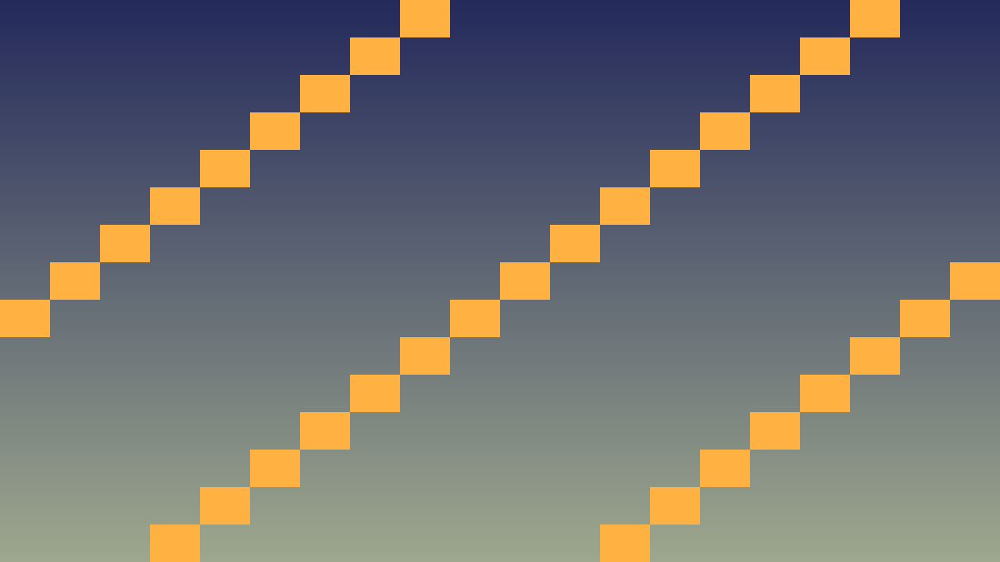
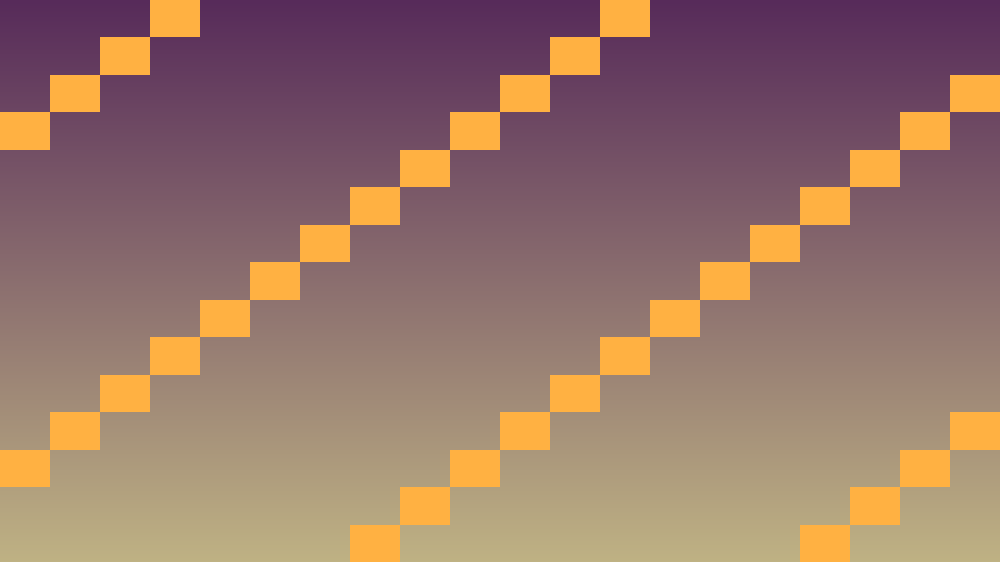

6.4 Debugging (atkļūdošana) un profiling (profilēšana)
Stundas uzdevums: Apgūt Godot debugger (atkļūdotājs), breakpoints (pārtraukumpunkts), un izmantot to, lai atrastu bugs (kļūdas).
80 min plāns: Teorija un paraugs (~10 min) · 1. uzdevums (~20 min) - atrodi kļūdu ar output (izdrukām) · 2. uzdevums (~25 min) - lieto breakpoint (pārtraukumpunkts) un variable (mainīgo) skatu · 3. uzdevums (~20 min) - atrodi lēnāko vietu ar profiler (profileri) · Iesniegšana (~5 min).
Pirms sāc: atver savu spēli. Šodien apzināti salauzīsi code (kodu) un tad mācīsies to atrast - tā ir prasme, ko vajadzēs katrā project (projektā).
Teorija: Debugger (atkļūdotājs) un profiler (profileris)
Godot piedāvā vairākus rīkus problēmu atrašanai:
- Output (izvade) panel (panelis) -
GD.Print()unGD.PrintErr()ziņojumi. - Debugger (atkļūdotājs) - breakpoints (pārtraukumpunkts), step through, watch variables (mainīgie).
- Profiler (profilētājs) - function (funkciju) laika analīze.
- Network Profiler (profilētājs) - RPC un networking.
- Visual Profiler (profilētājs) - vizuāls diagrammu uzziņa.
// Debugging C# kodā
GD.Print("Player position: ", Position);
GD.PrintErr("Error: enemy is null!");
GD.PushWarning("Suspicious value: " + value);
// Pašpārbaudes
if (player == null)
{
GD.PrintErr("Player not found!");
return;
}
if (hp < 0)
{
throw new System.InvalidOperationException("Negative HP!");
}
// Nosacīta debug izvade
#if DEBUG
GD.Print("Function called: ", nameof(TakeDamage));
#endifKā šo izmantot project (projektā)
Atceries: ar redzamu efektu editor (redaktorā) nepietiek. Paskaidro, kura C# class (klase) glabā state (stāvokli), kura method (metode) to maina un kā Godot node (mezgls) structure (struktūra) izmanto šo code (kodu).
Pārbaudi: UI (lietotāja saskarne) signal (signāli), audio (skaņa) darbības, debug (atkļūdošana) output (izvade) un publishing (publicēšanas) template (sagatave) ir sasaistīta ar C# game state (spēles stāvokli).
public class PolishCheckpoint
{
public string Lesson = "6.4 Atkļūdošana un profilēšana";
public bool UsesCSharp = true;
public bool ConnectsUiSignals = true;
public bool RoutesAudioEvents = true;
public bool VerifiesExportBuild = true;
}Praktiskie uzdevumi
1. uzdevums -
Atrodi kļūdu ar output (izdrukām)
Beigās tu pratīsi atrast, kurā vietā value (vērtība) kļūst nepareiza.
- Ievies savā code (kodā) apzinātu kļūdu, piemēram nomaini
+uz-. - Palaid spēli un pieraksti, kas izskatās nepareizi.
- Pievieno
GD.Print("pozicija: ", Position);pirms aprēķina. - Pievieno tādu pašu output (izdruku) pēc aprēķina.
- Palaid un salīdzini abas value (vērtības).
- Atrodi pēc output (izdrukām) precīzo rindu, kur value (vērtība) kļūst nepareiza.
- Salabo kļūdu un izdzēs output (izdrukas).
Gatavs, kad: tu vari nosaukt konkrētu rindu, kurā value (vērtība) kļuva nepareiza, un kļūda ir izlabota.
2. uzdevums -
Lieto breakpoint (pārtraukumpunkts) un variable (mainīgo) skatu
Beigās tu pratīsi apturēt spēli un apskatīt visus variable (mainīgos) uzreiz.
- Atver tab (cilni) Debugger (atkļūdotājs).
- Uzliec breakpoint (pārtraukumpunkts) uz vienas code (koda) rindas, uzklikšķinot rindas numura kreisajā malā.
- Palaid spēli un pagaidi, līdz tā apstājas.
- Apskati panel (panelī) Stack (steks) Variables (mainīgie) visu variable (mainīgo) value (vērtības).
- Nospied Step Into (ieiet metodē) un vēro, kā izpilde iet pa vienai rindai.
- Pieraksti, kāda value (vērtība) bija tavam galvenajam variable (mainīgajam).
- Pieraksti, kad breakpoint (pārtraukumpunkts) ir ērtāks par output (izdrukām).
Gatavs, kad: spēle apstājas norādītajā rindā, un tu vari nolasīt variable (mainīgo) value (vērtības), tās neizdrukājot.
3. uzdevums -
Atrodi lēnāko vietu ar profiler (profileri)
Beigās tu zināsi, kura function (funkcija) patērē visvairāk laika.
- Atver Debugger (atkļūdotājs) -> Profiler (profilētājs) un nospied Start.
- Spēlē 30 sekundes ar aktīvu spēli.
- Aptur profiler (profileri) un sakārto list (sarakstu) pēc laika.
- Pieraksti trīs function (funkcijas), kas aizņem visvairāk laika.
- Pārbaudi, vai kāda no tām tiek izsaukta biežāk, nekā vajadzētu.
- Salīdzini
_Processun_PhysicsProcesskopējo laiku. - Pieraksti vienu ideju, ko varētu uzlabot.
Gatavs, kad: tev ir pierakstītas trīs laikietilpīgākās function (funkcijas) un viena konkrēta uzlabojuma ideja.
Papildu uzdevums - Pievieno pašpārbaudes output (izdrukas)
Ja pamatdarbs ir gatavs, liec kodam pašam brīdināt par kļūdām.
- Pievieno pārbaudi, vai svarīgs node (mezgls) tiešām tika atrasts.
- Izdrukā
GD.PrintErr("Nav atrasts mezgls!");, ja tas irnull(tukša atsauce). - Pārsauc node (mezglu) scene (scēnā) un palaid spēli.
- Pieraksti, ar ko sarkanā
GD.PrintErroutput (izdruka) atšķiras no parastās. - Atgriez nosaukumu un pārbaudi, ka brīdinājums pazūd.
Gatavs, kad: pārsaucot node (mezglu), console (konsolē) parādās sarkans brīdinājums, nevis spēle klusi avarē.
Ko sagatavo
Stundas mērķis: Tu proti atrast kļūdu trīs veidos: ar output (izdrukām), ar breakpoint (pārtraukumpunkts) un variable (mainīgo) skatu, un ar profiler (profileri) atrast laikietilpīgāko function (funkciju).
GitHub repository (krātuvē) jābūt:
- Screenshot (ekrānuzņēmums) ar Debugger (atkļūdotājs) panel (paneli), kurā spēle apturēta breakpoint (pārtraukumpunkts) vietā un redzami variable (mainīgie).
- Screenshot (ekrānuzņēmums) ar profiler (profilera) list (sarakstu), sakārtotu pēc laika.
- README.md: kura rinda saturēja apzināti ievesto kļūdu un kā tu to atradi.
- README.md: trīs laikietilpīgākās function (funkcijas) un viena uzlabojuma ideja.
Kā iesniedz: Veic commit (izmaiņu fiksējums) un push (nosūtīšana uz attālo krātuvi). Skolotāja norādītajā vietā ievieto tikai GitHub repository (krātuves) link (saiti); visiem prasītajiem file (failiem), README.md pierakstiem un pierādījumiem jābūt pašā repository (krātuvē).
Biežākās kļūdas
- Breakpoint (pārtraukumpunkts) nestrādā: Palaid project (projektu) no Godot .NET debug (atkļūdošana) režīmā un pārliecinies, ka C# project (projekts) ir uzbūvēts bez kļūdām.
- Print panel (panelis) pārplūst: Pārāk daudz print - lieto conditional vai noņem.
- Profiler (profilētājs) crashes: Pārliecinies par jaunāko Godot version (versiju).
Godot screenshot (ekrānuzņēmumi)


Code sample (koda piemērs) (paplašināts)
using Godot;
using System;
public partial class Player : CharacterBody2D
{
[Signal] public delegate void DamagedEventHandler(int amount);
private string playerName = "Player";
private int hp = 100;
public void TakeDamage(int amount)
{
// Validate input
if (amount < 0)
throw new ArgumentOutOfRangeException(nameof(amount), amount,
"Damage amount must be non-negative.");
// Log for debugging
GD.Print("Player ", playerName, " taking ", amount,
" damage. Current HP: ", hp);
// Apply damage
hp = Math.Max(0, hp - amount);
// Conditional debug
#if DEBUG
if (hp == 0)
{
GD.Print("Player died at position ", Position);
}
#endif
EmitSignal(SignalName.Damaged, amount);
}
}